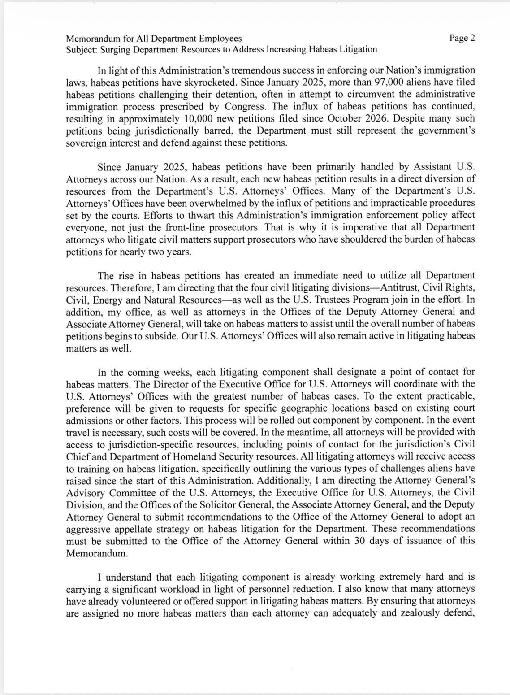
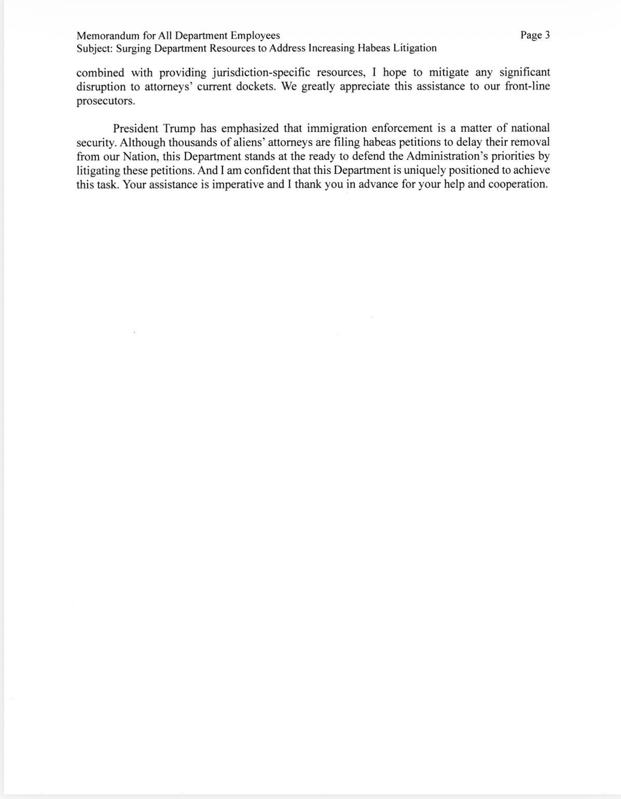
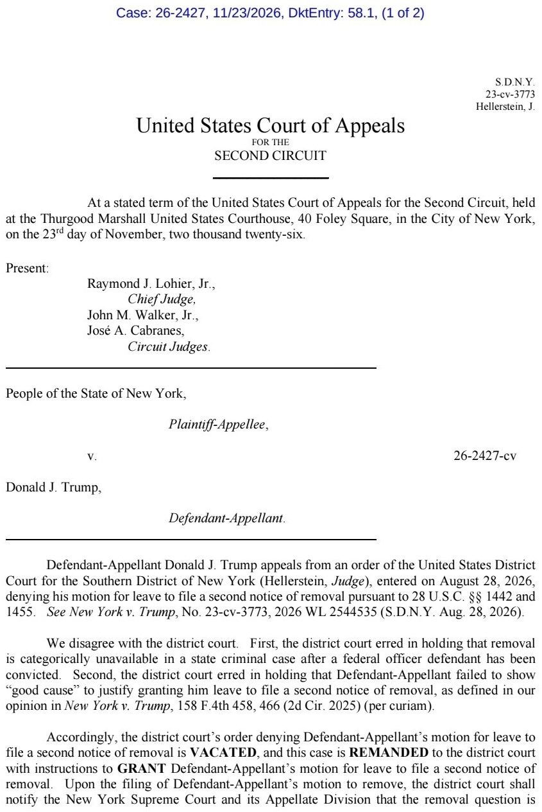
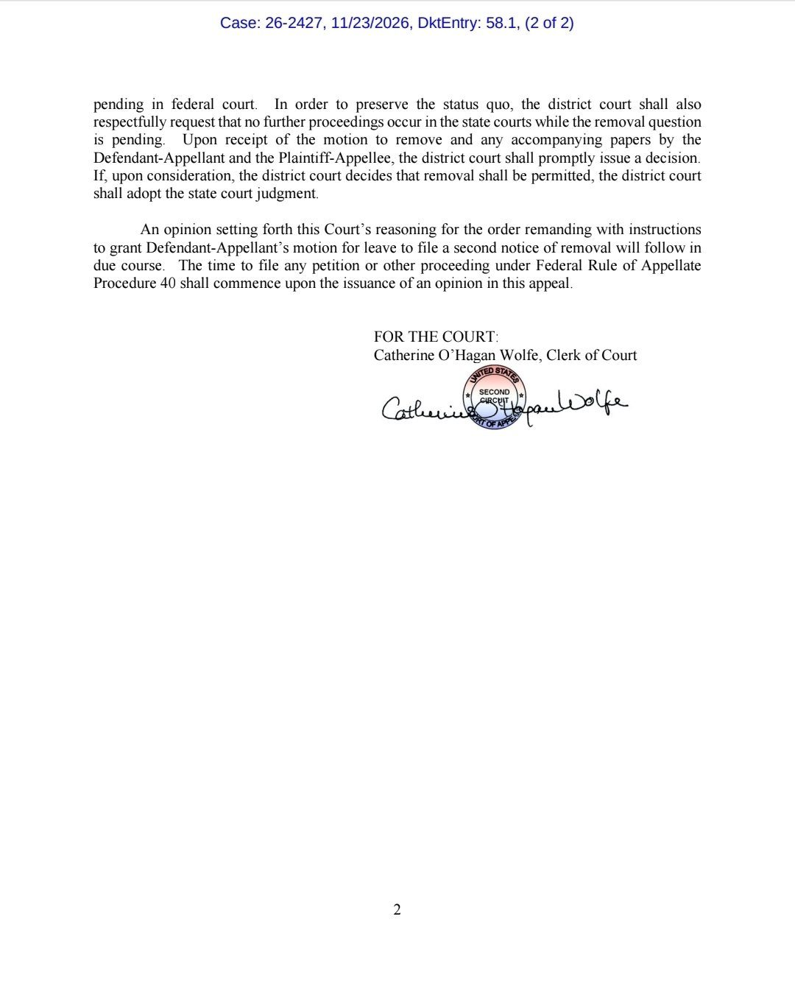
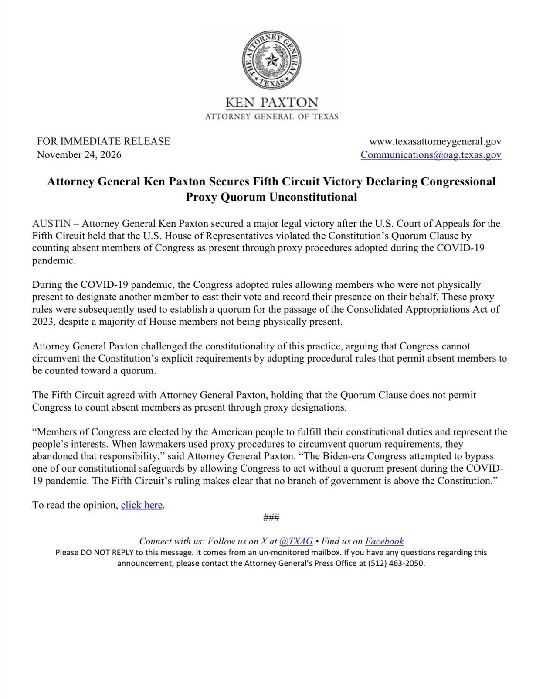
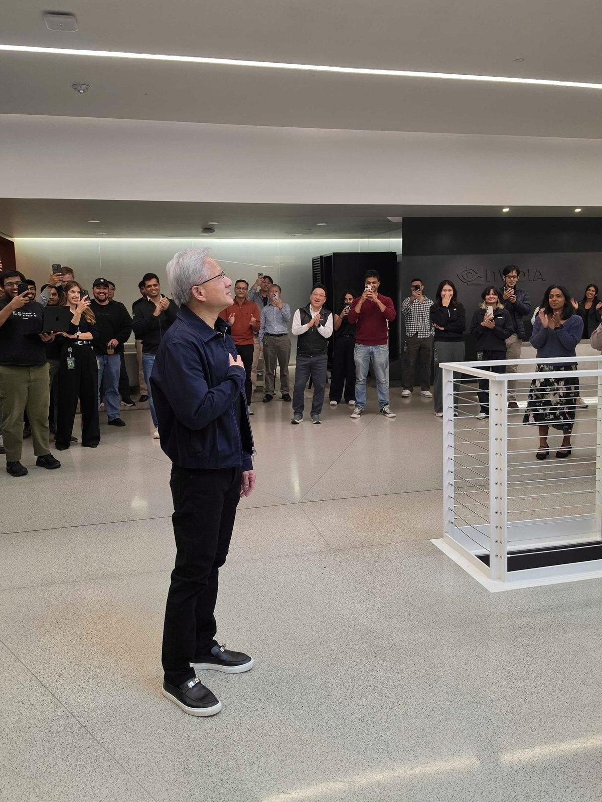

BREAKING: @FoxNews has obtained a memo that AG Todd Blanche sent out to DOJ this afternoon announcing that DOJ will be surging lawyers and resources to jurisdictions that have been overwhelmed by habeas corpus petitions filed by illegal aliens and their lawyers after their ICE arrests.
A habeas petition is a request to a federal judge to determine if detention is unlawful. These requests are handled by federal judges, not immigration judges, and DOJ feels many of the claims are “frivolous” and get put in the hands of activist/sympathetic judges, and the petitions are an effort by immigration lawyers and activists to thwart enforcement of U.S. immigration law.
Nearly 100,000 of these habeas petitions have been filed since the start of the Trump admin, and aliens have been successful in using them to get released from ICE custody after arrest.
Some US Attorney Office have reportedly been so overwhelmed by these petitions, they are sometimes unable to send anyone to court to challenge them.
With this memo, AG Blanche appears to be telling DOJ help is coming - and these petitions will be fought in court to advance President Trump’s immigration enforcement agents.
Fox is told the most overwhelmed districts have been:
Central District of California Eastern District of California Western District of Texas Southern District of Texas New Jersey Colorado Western District of Washington
This evening, the Eighth Circuit Court of Appeals issued an order that allows the Army to proceed with the detonation of long-ago-placed explosives (2009) at the Iowa Army Ammunition Plant. Likewise, the current Governor of Iowa, Kim Reynolds, has given her support to go forward, and the Governor Elect, Rob Sand, has stated that the decision should be made "based on the information they have from the people they brought in to do the job months ago and have been on the ground in Middletown for weeks."
It is the unanimous judgement of our people — the Army, Navy, EPA, ATF, FBI, DARPA, DoE, CDC, HHS, FEMA and every other agency involved — that the Army should proceed with an extensively mitigated, carefully controlled detonation, which will occur this Wednesday morning, as previously scheduled, based on forecast wind conditions.
This is a consensus decision. Every expert agency agrees, and both Iowa's current and incoming Governors say the call belongs to the experts. We are proceeding with the controlled removal in full coordination with all state, local and federal authorities, because the safety of Iowa's citizens comes first.
As part of a coordinated, whole-of-government effort, NASA has rapidly mobilized specialized research aircraft, space-based observation capabilities, and scientific personnel to support ongoing efforts at the Iowa Army Ammunition Plant in Middletown, Iowa. NASA stands ready to bring its unique capabilities and world-class scientific expertise to bear whenever called upon in service of the nation and the American people.
In support of this effort, NASA has deployed a P-3 Orion and Gulfstream III from the agency's Langley Research Center in Virginia and a NASA Ames contracted B200, and is leveraging observations from its space-based Tropospheric Emissions: Monitoring of Pollution (TEMPO) instrument.
Working alongside our partners across the federal government, NASA is utilizing its advanced scientific instruments and expertise to collect environmental and atmospheric data to inform the broader federal response.
Missed a session at Swell, or want to rewatch one? Every session is now available on YouTube.
Watch the keynotes and conversations from the Main Stage and Platinum Summit, plus the full set of breakout sessions.
Main Stage & Platinum Summit: https://www.youtube.com/playlist?list=PLRXIwKr7lYxo
Breakout sessions: https://www.youtube.com/playlist?list=PLV5dOu8Ot23o
The Swiss National Bank, together with eight institutions, today launches an exploratory project for a Swiss Financial Ledger.
JUST IN: 🇭🇰 BlackRock launches its first tokenized money market fund in Hong Kong, allowing investments using crypto stablecoins.
JPMorgan and other major precious metals dealers have traded a new form of digital gold in London for the first time
NEW: The Second Circuit revived President Trump's bid to move his New York hush-money criminal case to federal court, ruling that the convictions do not bar him from seeking such a transfer.


VICTORY: I secured a Fifth Circuit victory declaring congressional proxy quorum unconstitutional.

The release tonight in the Omar case includes a couple of revealing elements, including this statement from the Justice Department: "The United States believes that ILHAN has committed [REDACTED] crimes over decades— beginning long before she was ever in Congress."...

New: Google plans to make a 24/7 AI TV channel that will use the information it knows about you to create personalized “shows” starring *you* and featuring customized advertisements
JUST IN: 🇺🇸 Hackers breach CIA and US intelligence systems, exposing unclassified government data in cyberattack, NYT reports.
BREAKING: SpaceX launches a Falcon 9 rocket carrying a highly classified U.S. Space Force mission from California.
TRUMP EFFECT: Niron Magnetics Announces $1.8B Investment in Alabama, Creating 700 Jobs
DOJ recovers $8B, charges more than 800 suspects in largest anti-scam surge in history